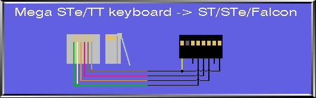
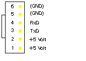

|
|
15.1.1 How to connect a STe-Keyboard
How to connect Mega ST/STe/TT keyboards to ST/STe/Falcon
computers
Second edition, August 13, 1995. Sater, Sweden, DHS Bunker.
This description was originally made by Jonas Ekelund back in -91,
but it only explained Mega ST keyboard connection, and not Mega STe
and TT.
So, here are a slight update with both of them included.
Fileformat is GIF, and could be loaded into any decent GIF viewer (ie,
something like GemView on Falcon/TT in 256 col mode, or
Photochrome/S.O.F. on ST/e).
 Picture 1 + 2 - MSTe/TT-Keybord connecting
Connecting of 260/520/1040ST/F030 (F/FM/E) Keyboards as Text
For a better understanding you found here the pinouts for any
atari tos computer. Watch out for differend connectings to the
different mainboards!
 Picture 3 - RJ45 plug
Watch out for the right pinout of the RJ45 plug on the MegaST(e)
keyboards. You have to look on top of the RJ45 plug
|

|
|